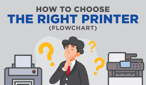

Top 5 Digital Printing Trends in 2025
Discover the latest advancements in digital printing technology—and how they can give your business a competitive edge. From faster turnaround times to superior print quality, today’s innovations are transforming the way businesses approach their printing needs.
Read More

How to Choose the Right Printer for Your Business
With so many options on the market—laser, inkjet, digital, large-format, and even 3D—finding the right printer can feel overwhelming. Whether you're a freelancer, a growing business, or part of a large enterprise, this comprehensive guide will walk you through everything you need to know to make a smart, cost-effective choice. From print volume and functionality to long-term running costs, we’ll help you find the perfect match for your needs and budget.
Read More

The 3D Printing Revolution: What You Need to Know
From healthcare to aerospace, 3D printing is no longer just a futuristic concept—it’s a game-changer. Explore how this groundbreaking technology is transforming industries by streamlining production, reducing costs, and enabling innovations once thought impossible.
Read More